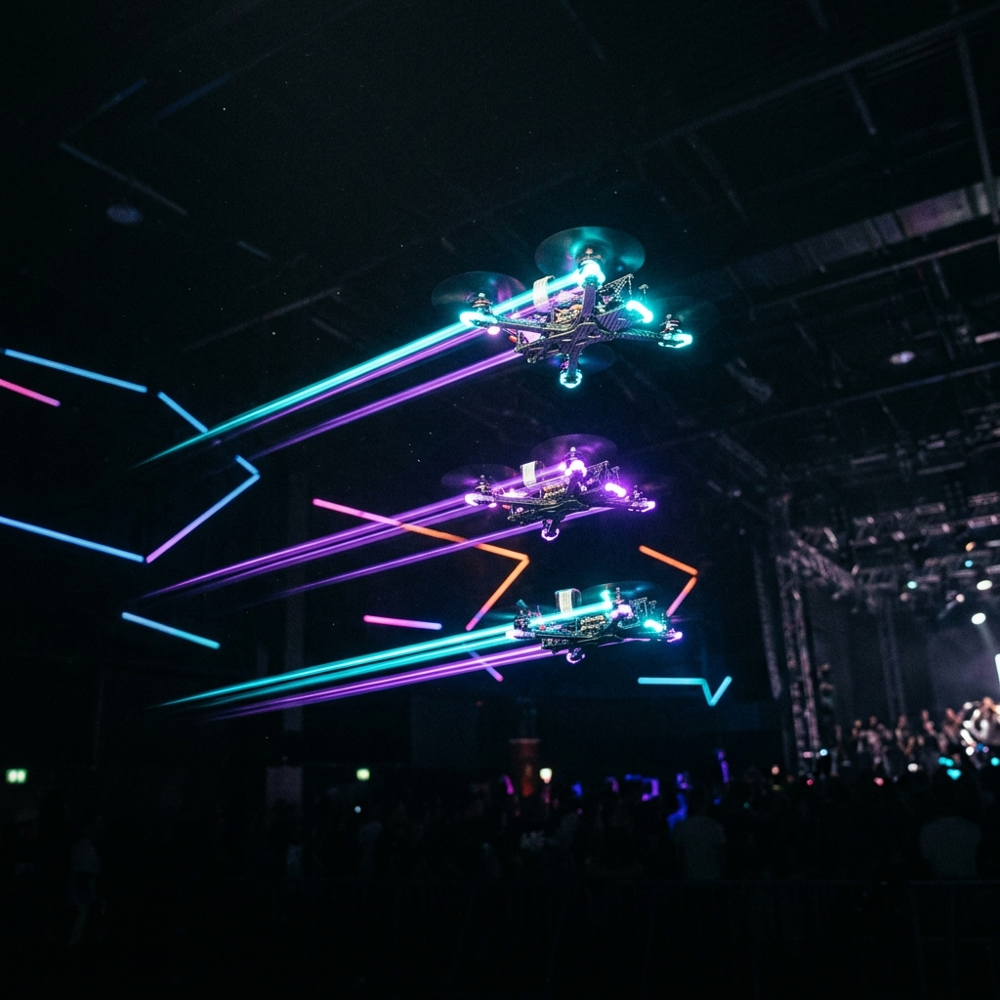

学園祭での新たな挑戦
飛行ロボットコンテストで培った技術を、エンターテインメントの領域へ
東京理科大学 宇宙クラブでは、これまでの機体開発や自律制御の知見を活かし、学園祭にて「屋内ドローンショー」を実施します。
ハードウェアの設計から、複数のドローンを同時に制御するソフトウェアシステムまで、すべてを学生の手で一から開発。実現すれば学生として日本初の取り組みです。
The Performance
3台のドローンが織りなす光と軌跡

※写真はイメージです
3-Drone
初挑戦である今年は、3台のドローンからスタート。
Custom LED System
マイコンのフルカラーLEDを使用し、LEDライトと通信システムを統合しています。
Safety First
屋内での実施に向け、プロペラガードの完全装備や通信フェールセーフ機能など、観客の安全を最優先したハード・ソフト両面のフェールセーフを実装しています。